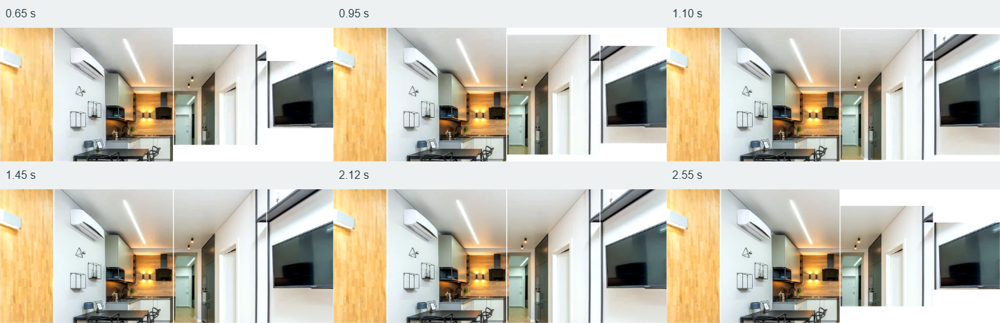
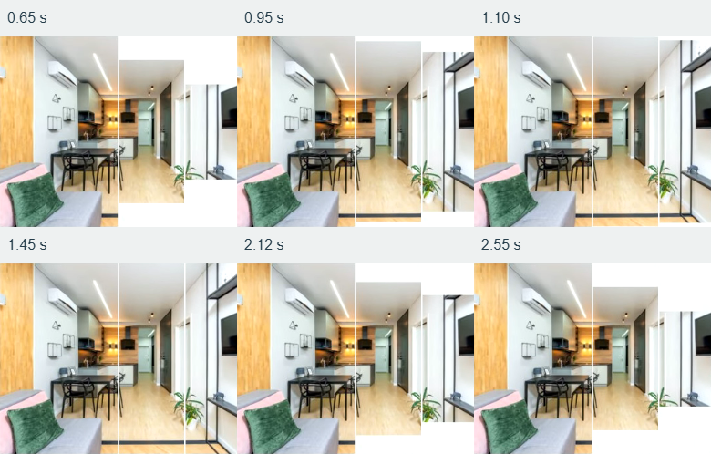

Entrear — interações da Etapa 4
Evidências locais de um site demonstrativo. Os vídeos usam quadros reais do Chrome, sem interpolação. Acione Reproduzir para assistir; não há reprodução automática. A captura tem taxa variável e não substitui a avaliação no site ao vivo.
Quadros extraídos dos vídeos
Abertura inicial, passagem, abertura completa e retorno.


Experimentar no navegador
- Na raiz do projeto, execute
npm.cmd run deve abra a página local. - Use Tab até Instalação e alterne com as setas. Troque novamente durante a abertura.
- Observe o aparelho, o eixo da fotografia e as orientações abaixo da imagem.
- Teste Menu, Escape, âncoras, perguntas frequentes e orçamento.
- Ative movimento reduzido no sistema ou no DevTools e repita as ações.